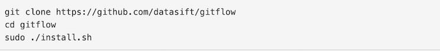

According to Vincent’s original blog post, he’s listed all of the individual Git commands that you need to use to create all of the different branches in the GitFlow model. They’re all standard Git commands … and if you’re also still getting your head around Git (and still learning why it is different to centralised source control systems like Subversion, or replicated source control systems like Mercurial), it adds to what is already quite a steep learning curve.
Vincent created an extension for Git, called GitFlow, which turns most of the steps you need to do into one-line commands. At DataSift, we used it for six months, and we liked it - but we wanted it to do even more. We also wanted it to work better with GitHub, so to reduce confusion with the original GitFlow tools, we’ve decided to maintain our own fork of the GitFlow tools called HubFlow.
HubFlow is:
The main differences between the original GitFlow tools and HubFlow are:
Installing the HubFlow tools for the first time is very easy:

If you want to upgrade to the latest version of HubFlow, simply run:
To see all of the commands that HubFlow provides, simply run: